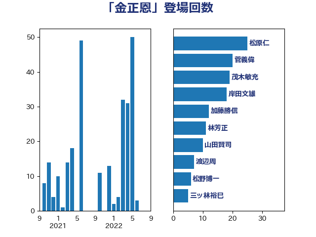

単語「金正恩」

| 松原仁 | 立憲民主党 | 25 回 |
| 菅義偉 | 自由民主党 | 20 回 |
| 茂木敏充 | 自由民主党 | 19 回 |
| 岸田文雄 | 自由民主党 | 18 回 |
| 加藤勝信 | 自由民主党 | 12 回 |
| 林芳正 | 自由民主党 | 11 回 |
| 山田賢司 | 自由民主党 | 10 回 |
| 渡辺周 | 立憲民主党 | 7 回 |
| 松野博一 | 自由民主党 | 6 回 |
| 三ッ林裕巳 | 自由民主党 | 5 回 |
| 浜地雅一 | 公明党 | 5 回 |
| 岸信夫 | 自由民主党 | 4 回 |
| 岡田克也 | 立憲民主党 | 3 回 |
| 笠井亮 | 日本共産党 | 3 回 |
| 野間健 | 立憲民主党 | 3 回 |
| 太栄志 | 立憲民主党 | 2 回 |
| 斎藤アレックス | 国民民主党 | 2 回 |
| 梶山弘志 | 自由民主党 | 2 回 |
| 浅田均 | 日本維新の会 | 2 回 |
| 清水真人 | 自由民主党 | 2 回 |
| 福山哲郎 | 立憲民主党 | 2 回 |
| ながえ孝子 | 無所属 | 1 回 |
| 世耕弘成 | 自由民主党 | 1 回 |
| 大塚耕平 | 国民民主党 | 1 回 |
| 宮路拓馬 | 自由民主党 | 1 回 |
| 後藤祐一 | 立憲民主党 | 1 回 |
| 渡辺猛之 | 自由民主党 | 1 回 |
| 田中健 | 国民民主党 | 1 回 |
| 竹内真二 | 公明党 | 1 回 |
| 笠浩史 | 無所属 | 1 回 |
| 美延映夫 | 日本維新の会 | 1 回 |
| 舩後靖彦 | れいわ新選組 | 1 回 |
| 重徳和彦 | 立憲民主党 | 1 回 |
| 金村龍那 | 日本維新の会 | 1 回 |
| 高木啓 | 自由民主党 | 1 回 |
| 鷲尾英一郎 | 自由民主党 | 1 回 |